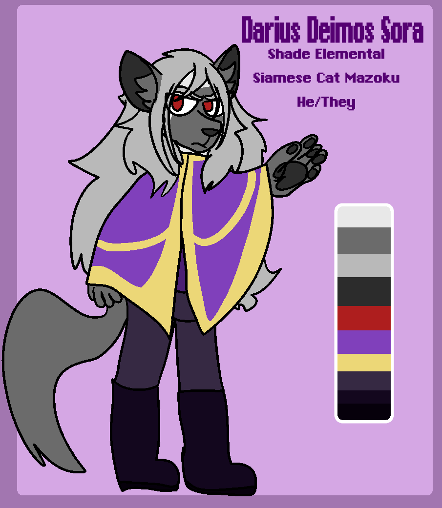

Darius Deimos Sora
he/they | siamese | shade elemental

art placeholder
FULL NAME // Darius Deimos Sora
PRONOUNCIATION // Dar-ee-us Day-mos So-rah
AGE // 121 (Arc 1), 126 (Arc 2), 143 (Arc 3)
PRONOUNS // He/They
SPECIES // Mazoku (siamese cat)
AFFILIATION // Formerly, The Guild. Now, themself.
ABILITIES // Combat magic, Shade Elemental magic
ALLIES // Faith, Luca, Leena, Aera, Narcisse, Hyacinth, Acantha, Kohaku, Kalas, Matilda
ADVERSARIES // Xenia, The Guardian, Straton
A soul in search of something lost. A Mazoku from the Islands, Darius is the son of Queen Xenia Euphemia Sora, and sibling to Faith Aigle Sora.
Childhood friends with Straton, the two used to scheme together on just how to get back at Xenia for their mistreatment. Upon his friend's banishment, Darius became reclusive.
Having had a rough childhood, Darius is distant and quiet, moreso after the loss of his dearest older sister. Despite this, and despite the overtaking of his home, he believes in the good of everyone, and has hope that someday he can return his home to its former glory... And maybe see his sister again.
Come Arc 3, Darius takes on a new identity, and assists Matilda, Kohaku and Kalas in their journey to save the world from Apollo.
His magical affinity is shade.